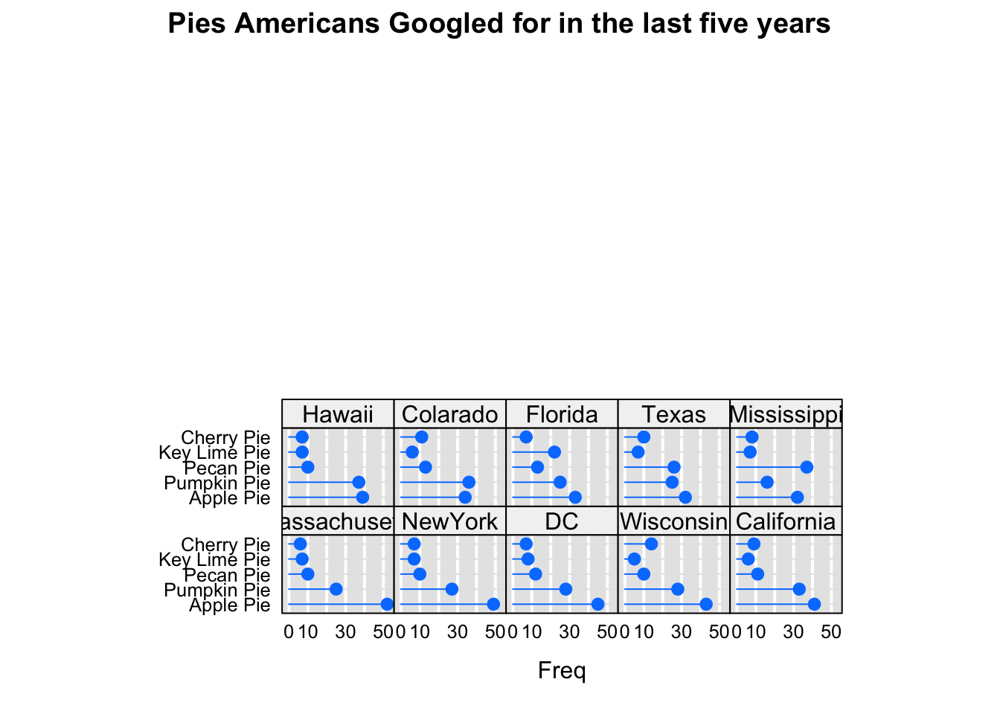
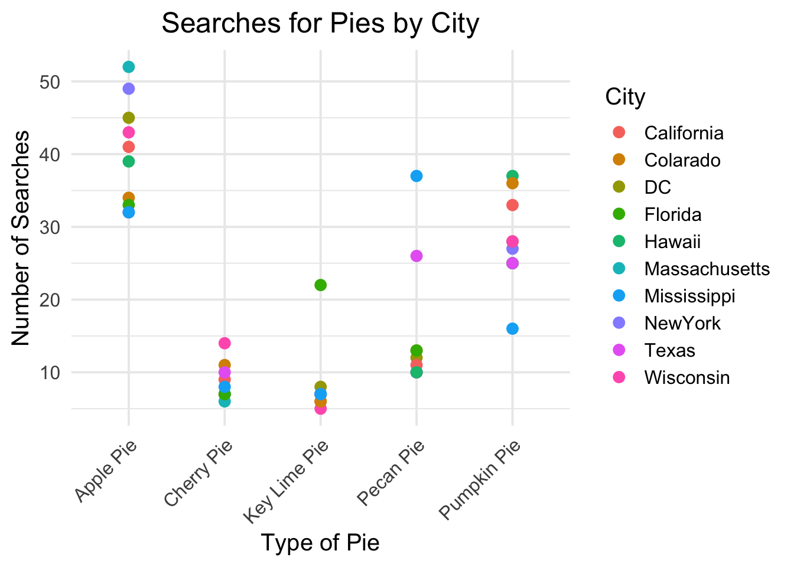
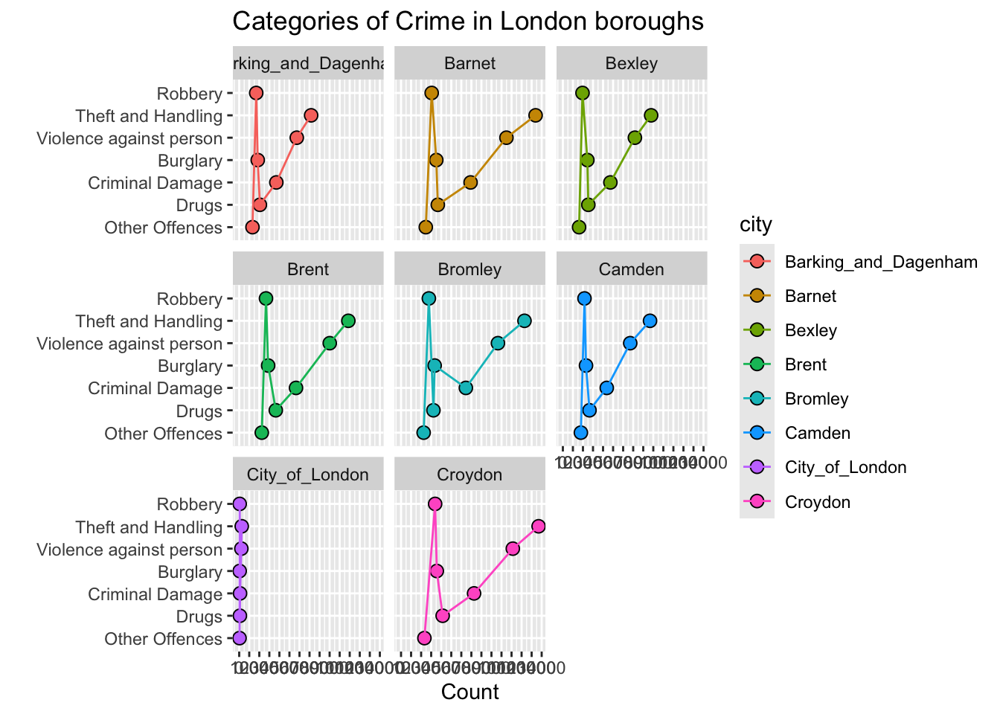

type <-c("Apple Pie", "Pumpkin Pie", "Pecan Pie", "Key Lime Pie", "Cherry Pie")City <-c("Massachusetts", "NewYork","DC","Wisconsin","California","Hawaii","Colarado","Florida","Texas","Mississippi")colnames(mat) <- Cityrownames(mat) <- type mat
Massachusetts NewYork DC Wisconsin California Hawaii Colarado
Apple Pie 52 49 45 43 41 39 34
Pumpkin Pie 25 27 28 28 33 37 36
Pecan Pie 10 10 12 10 11 10 13
Key Lime Pie 7 7 8 5 6 7 6
Cherry Pie 6 7 7 14 9 7 11
Florida Texas Mississippi
Apple Pie 33 32 32
Pumpkin Pie 25 25 16
Pecan Pie 13 26 37
Key Lime Pie 22 7 7
Cherry Pie 7 10 8
oneColumn =dotplot(mat, groups =FALSE,layout =c(5, 5), aspect =0.7,origin =0,type =c("p","h"),main ="Pies Americans Googled for in the last five years",scales =list(x =list(tck =0, alternating =FALSE)),panel =function(...){panel.fill(rgb(.9,.9,.9))panel.grid(h =0,v =-1,col ="white",lwd =2)panel.dotplot(col =rgb(0,.5,1),cex =1.1,...) })oneColumn

mat_df <-as.data.frame(mat)mat_df$City <-rownames(mat_df)# Transform to long formatmat_long <-pivot_longer(mat_df, cols =-City, names_to ="Type", values_to ="Count")# Create the scatter plotscatter_plot <-ggplot(mat_long, aes(x = City, y = Count, color = Type)) +geom_point(size =3) +# Scatter pointslabs(title ="Searches for Pies by City",x ="Type of Pie",y ="Number of Searches",color ="City") +theme_minimal(base_size =15) +theme(plot.title =element_text(hjust =0.5)) +# Center titletheme(axis.text.x =element_text(angle =45, hjust =1)) # Angle x-axis text for readability# Display the plotprint(scatter_plot)

# Create the scatter plotscatter_plot <-ggplot(mat_long, aes(x = Type, y = Count, color = City)) +geom_point(size =3) +# Scatter pointslabs(title ="Searches for Pies by City",x ="Type of Pie",y ="Number of Searches",color ="City") +theme_minimal(base_size =15) +theme(plot.title =element_text(hjust =0.5)) +# Center titletheme(axis.text.x =element_text(angle =45, hjust =1)) # Angle x-axis text for readability# Display the plotprint(scatter_plot)
Robbery Theft and Handling Violence against person
2216.875 9390.250 7512.500
Burglary Criminal Damage Drugs
2492.125 4898.250 2748.125
Other Offences
1757.375
(typeOrd <-order(-typeMeans)) # in descending order
types =rownames(London_crimes)London_crimes$Types =factor(types, ordered = T, levels =rev(types) ) #including row labels as a new column and categorize them as a factorLondon_crimes
Barking_and_Dagenham Barnet Bexley Brent Bromley Camden
Robbery 1694 3052 1956 2667 2770 2152
Theft and Handling 7160 13396 8787 10865 12289 8676
Violence against person 5732 10492 7170 9014 9646 6705
Burglary 1846 3511 2439 2882 3347 2303
Criminal Damage 3696 6925 4731 5655 6454 4370
Drugs 2060 3660 2534 3642 3225 2652
Other Offences 1324 2465 1614 2249 2251 1794
City_of_London Croydon Types
Robbery 50 3394 Robbery
Theft and Handling 254 13695 Theft and Handling
Violence against person 214 11127 Violence against person
Burglary 48 3561 Burglary
Criminal Damage 85 7270 Criminal Damage
Drugs 69 4143 Drugs
Other Offences 34 2328 Other Offences
rownames(London_crimes) =NULL# removing row names from the data set (Optional)London_crimes
London_crimesType <-gather(London_crimes, key = city, value = count,Barking_and_Dagenham:Croydon, factor_key = T)London_crimesType
Types city count
1 Robbery Barking_and_Dagenham 1694
2 Theft and Handling Barking_and_Dagenham 7160
3 Violence against person Barking_and_Dagenham 5732
4 Burglary Barking_and_Dagenham 1846
5 Criminal Damage Barking_and_Dagenham 3696
6 Drugs Barking_and_Dagenham 2060
7 Other Offences Barking_and_Dagenham 1324
8 Robbery Barnet 3052
9 Theft and Handling Barnet 13396
10 Violence against person Barnet 10492
11 Burglary Barnet 3511
12 Criminal Damage Barnet 6925
13 Drugs Barnet 3660
14 Other Offences Barnet 2465
15 Robbery Bexley 1956
16 Theft and Handling Bexley 8787
17 Violence against person Bexley 7170
18 Burglary Bexley 2439
19 Criminal Damage Bexley 4731
20 Drugs Bexley 2534
21 Other Offences Bexley 1614
22 Robbery Brent 2667
23 Theft and Handling Brent 10865
24 Violence against person Brent 9014
25 Burglary Brent 2882
26 Criminal Damage Brent 5655
27 Drugs Brent 3642
28 Other Offences Brent 2249
29 Robbery Bromley 2770
30 Theft and Handling Bromley 12289
31 Violence against person Bromley 9646
32 Burglary Bromley 3347
33 Criminal Damage Bromley 6454
34 Drugs Bromley 3225
35 Other Offences Bromley 2251
36 Robbery Camden 2152
37 Theft and Handling Camden 8676
38 Violence against person Camden 6705
39 Burglary Camden 2303
40 Criminal Damage Camden 4370
41 Drugs Camden 2652
42 Other Offences Camden 1794
43 Robbery City_of_London 50
44 Theft and Handling City_of_London 254
45 Violence against person City_of_London 214
46 Burglary City_of_London 48
47 Criminal Damage City_of_London 85
48 Drugs City_of_London 69
49 Other Offences City_of_London 34
50 Robbery Croydon 3394
51 Theft and Handling Croydon 13695
52 Violence against person Croydon 11127
53 Burglary Croydon 3561
54 Criminal Damage Croydon 7270
55 Drugs Croydon 4143
56 Other Offences Croydon 2328
ggplot(London_crimesType, aes(x= count,y=Types,fill = city,group = city)) +geom_point(shape =21, size =2.8) +geom_line(aes(color = city)) +labs(x ="Count",y="",title ="Categories of Crime in London boroughs")+facet_wrap(~city)+scale_x_continuous(breaks=seq(0,14000,by=1000))

ggplot(London_crimesType, aes(x = city, y = Types, fill = count)) +geom_tile(color ="white") +scale_fill_gradient(low ="yellow", high ="red") +# Adjust colors as neededlabs(x ="London Boroughs", y ="Crime Types", title ="Crime Categories Across London Boroughs") +theme_minimal() +theme(axis.text.x =element_text(angle =45, hjust =1))